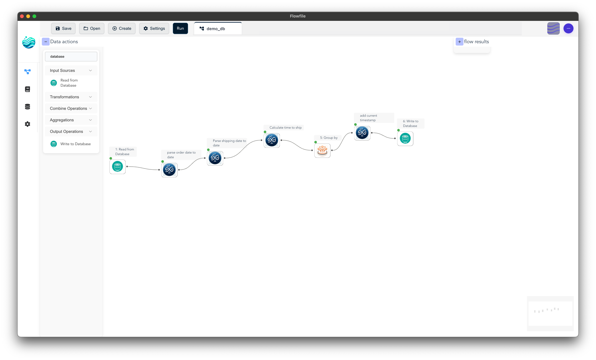
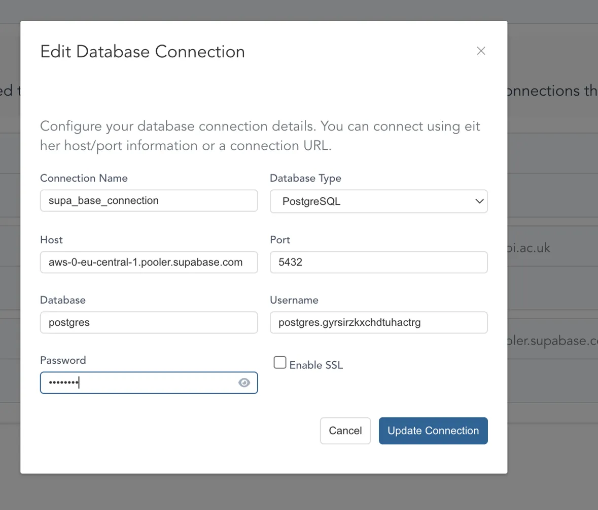
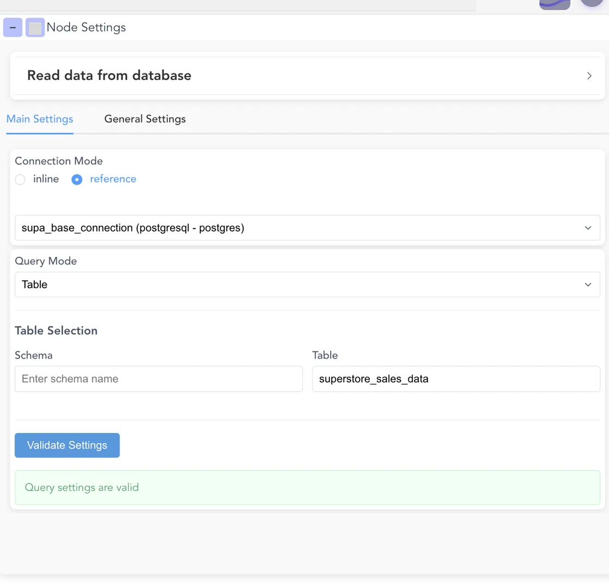
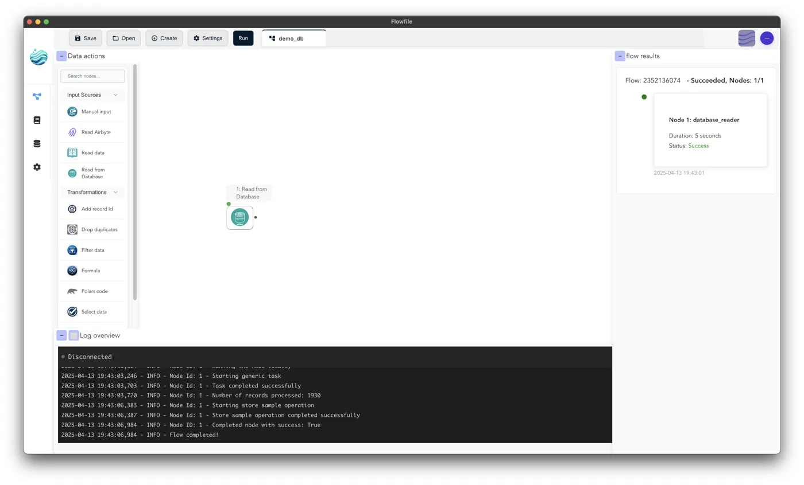
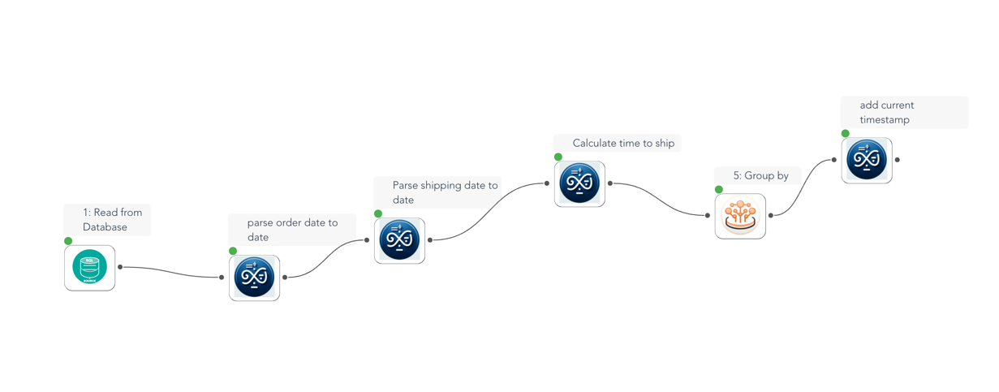
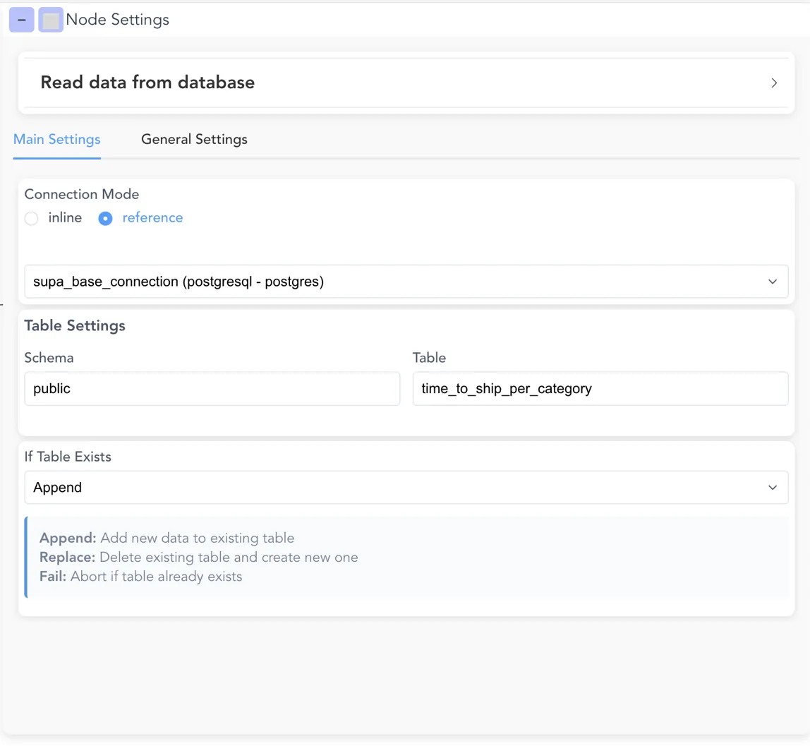
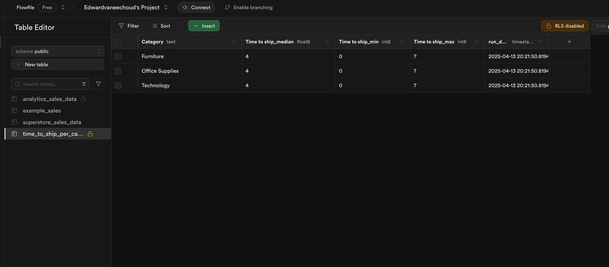

How to Connect and Work with PostgreSQL Databases in Flowfile
 Full flow overview
Flowfile's latest release introduces powerful database connectivity features that allow you to seamlessly integrate with PostgreSQL databases like Supabase. In this guide, I'll walk you through the entire process of connecting to a database, reading data, transforming it, and writing it back.
Prerequisites
Before diving in, make sure you have:
- A Flowfile account (free tier works fine)
- A Supabase account (sign up here if needed)
- Sample data to work with (we're using the Sales Forecasting Dataset from Kaggle so you can easily follow along with the transformation examples)
Step 1: Set Up Your Supabase Database
- Create a new project in Supabase.
- Download the sample dataset from Kaggle.
- Create a new table in your Supabase project (e.g.,
superstore_sales_data). - Import the dataset into your table (hint: use Supabase's built-in CSV import feature via the Table Editor).
- Note your database connection details (host, port, username, password).
Step 2: Configure Your Database Connection in Flowfile
- Open Flowfile and navigate to the database connection manager (often found under a "Connections" icon or within the main "Settings" area).
- Click "Create New Connection".
- Fill in your connection details:
- Connection Name:
supa_base_connection(or any name you prefer) - Database Type: PostgreSQL
- Host: Your Supabase host (e.g.,
aws-0-eu-central-1.pooler.supabase.com) - Port:
5432 - Database:
postgres - Username: Your Supabase username
- Password: Your Supabase password
- Enable SSL: Check if required by your database (Supabase typically requires it).
- Connection Name:
- Click "Update Connection" to save.
 Connection overview in Flowfile
Step 3: Create a New Data Flow
- Click "Create" or "New Flow" to start a fresh workflow.
- Navigate to the "Data actions" panel on the left sidebar.
- Find the "Read from Database" node (look for the database icon).
- Drag and drop this node onto your canvas.
Step 4: Configure Your Database Read Operation
- Click on the "Read from Database" node to open its settings panel.
- Select "reference" for Connection Mode (this tells Flowfile to use the connection you configured in Step 2).
- Choose your
supa_base_connectionfrom the Connection dropdown. - Configure the table settings:
- Schema:
public(or your specific schema) - Table:
superstore_sales_data
- Schema:
- Click "Validate Settings" to ensure everything is working.
- You should see a green confirmation message: "Query settings are valid".
 Node Settings panel showing database read configuration
Step 5: Run Your Initial Flow
- Click the "Run" button in the top toolbar.
- Watch the flow execution in the log panel at the bottom.
- When completed, you'll see a success message and the number of records processed.
- You can now click on the node output dot to preview the data that was read from your database.
 Flow execution logs showing successful database read operation
Ensure the image initial_run.png shows the successful run log/node status, not the configuration panel again.
Step 6: Add Data Transformations
Now that you've successfully read data from your database, you can add transformation steps:
- Add transformation nodes from the "Data actions" panel to your workflow.
- For example, creating time-to-ship metrics by category:
- Add formula nodes to transform the
shipping_dateanddelivery_datecolumns to a proper date type if needed. - Add a "Formula" node to calculate shipping time (e.g.,
delivery_date - shipping_date). Name the new columnshipping_time_days. - Add a "Group by" node to aggregate by product category.
- In the "Group by" node, calculate
min,max, andmedianof theshipping_time_dayscolumn.
- Add formula nodes to transform the
- For example, creating time-to-ship metrics by category:
- Connect these nodes in sequence by dragging from the output dot of one node to the input dot of the next.
- Configure each node with the specific transformations you need (refer to the Flowfile documentation for details on specific node configurations if needed).
 Overview of connected transformation nodes (Read -> Formula -> Group By)
Step 7: Add a Write to Database Node
- From the "Data actions" panel, find and drag the "Write to Database" node onto your canvas.
- Connect it to the output of the last transformation node (e.g., the "Group by" node).
- Configure the write operation in its settings panel:
- Connection Mode: Select "reference".
- Connection: Choose your
supa_base_connection. - Schema:
public(or your desired schema). - Table: Enter a name for your new output table (e.g.,
time_to_ship_per_category). - Write Mode: Select how to handle the table if it already exists:
- "Append": Add new data to the table.
- "Replace": Delete the existing table and create a new one with the output data.
- "Fail": Abort the flow if the table already exists.
 Setup write to database node configuration panel
Ensure the image configure_write_db.png actually shows the "Write to Database" node's configuration panel.
Step 8: Run Your Complete Workflow
- Click "Run" to execute the full workflow from start to finish.
- The system will:
- Read data from your source Supabase table (
superstore_sales_data). - Apply all the transformation steps (calculate shipping time, group by category).
- Write the aggregated results to your destination Supabase table (
time_to_ship_per_category).
- Read data from your source Supabase table (
- Check the logs to confirm successful execution, including messages about records read and written.
- Navigate to your Supabase project, open the SQL Editor or Table Editor, and check the
public.time_to_ship_per_categorytable to see your newly created data!
 Overview of the final result table in Supabase
Ensure the image result.png shows the data in the newly created Supabase table.
Conclusion
Flowfile's database integration capabilities make it incredibly simple to build professional-grade data pipelines without writing code. By connecting to Supabase or other PostgreSQL databases, you can easily extract, transform, and load data in a visual, intuitive environment.
Whether you're creating business dashboards, data warehousing solutions, or just exploring your data, the combination of Flowfile's visual workflow and Supabase's powerful PostgreSQL hosting gives you a robust platform for all your data needs.
Feel free to experiment with different transformation nodes and workflow patterns to build increasingly sophisticated data pipelines!
This guide is based on Flowfile v0.2.0, which introduced database connectivity features including PostgreSQL support, secure credential storage, and flexible connection management options.